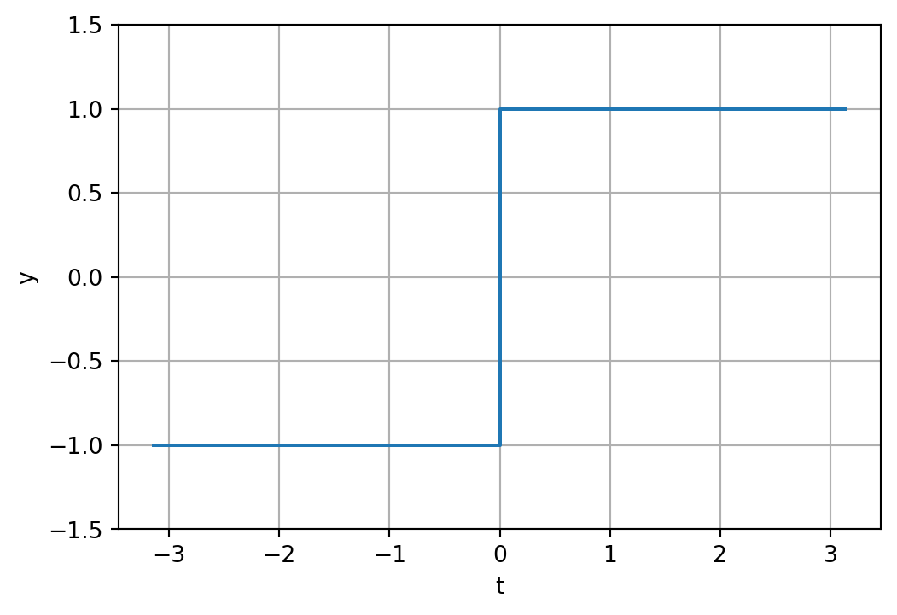
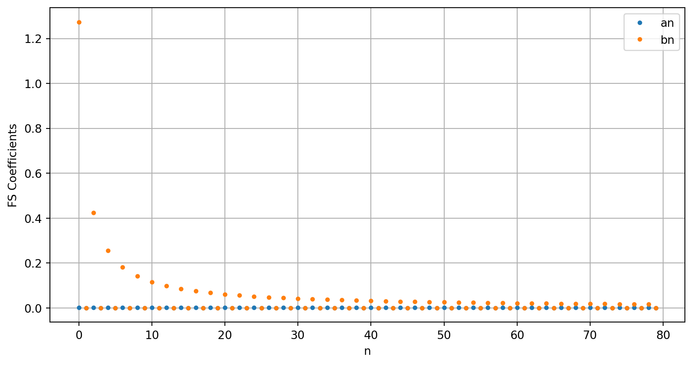
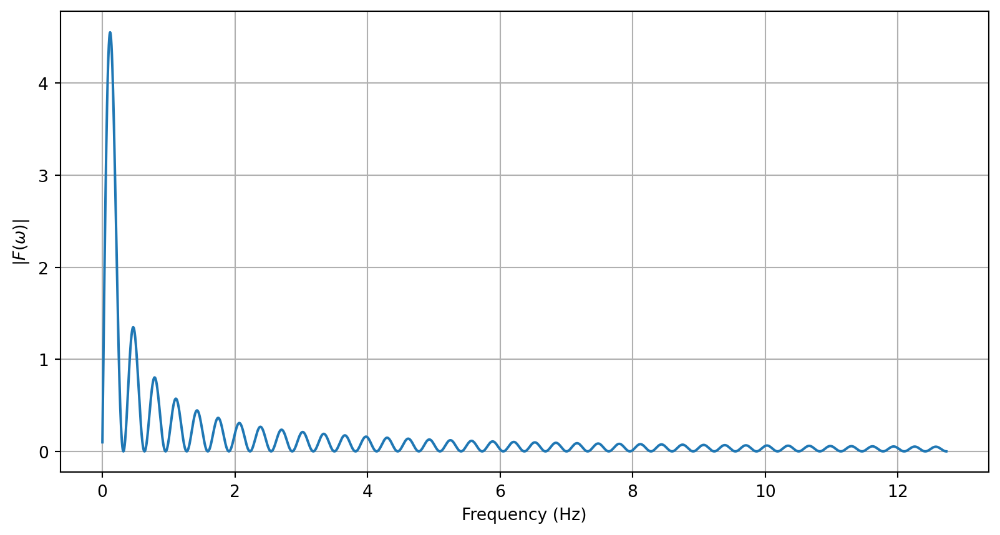
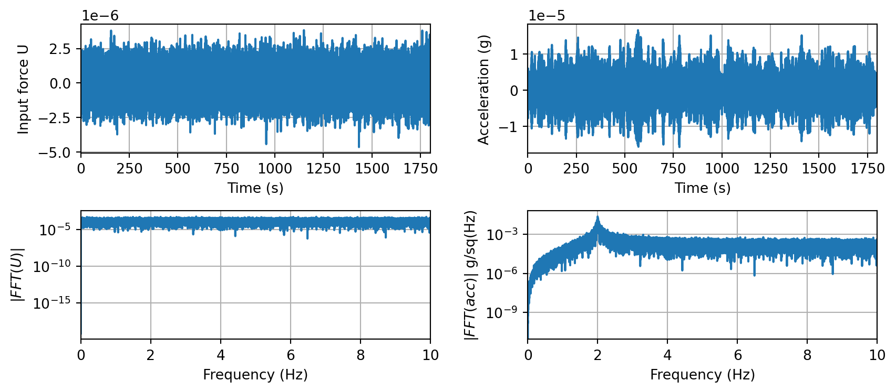
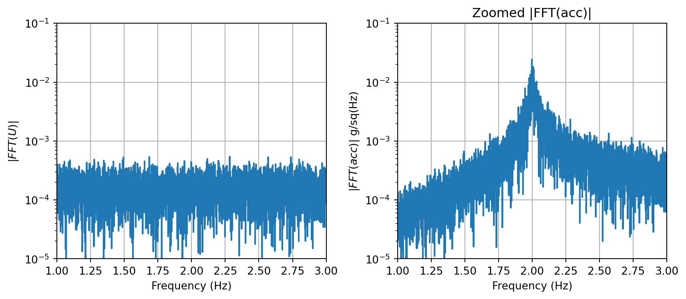
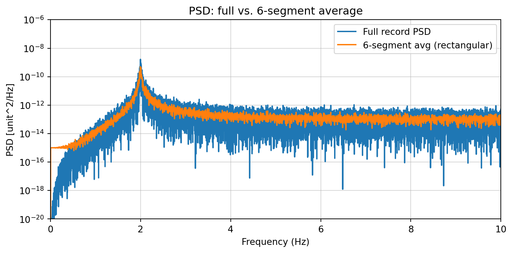

Signal Processing: PSD
Smart Civil Structures: L07
Signal Processing
- Fourier Series / Complex Fourier Series
- Fourier Transform (FT)
- Discrete Fourier Transform (DFT)
- Fast Fourier Transform (FFT)
- Power Spectral Density (PSD) / Amplitude Spectral Density (ASD)
Fourier Series
On a finite interval [-\(T/2\), \(T/2\)] (period \(T\)):
\[ f(t) = \frac{a_0}{2} + \sum_{n=1}^{\infty} \left[a_n \cos(n\omega t) + b_n \sin(n\omega t) \right], \]
\[ a_n = \frac{2}{T} \int_{-T/2}^{T/2} f(t) \cos(n\omega t)\,dt, \quad \omega = \frac{2\pi}{T} \]
\[ b_n = \frac{2}{T} \int_{-T/2}^{T/2} f(t) \sin(n\omega t)\,dt, \quad n=1,2,... \]
The series converges to f(t) if it is continuous, or to the midpoint of left/right limits at jump discontinuities.
Fourier Series: Demo
For the square-wave defined on \([-\pi, \pi]\), Fourier Series \(a_n\) and \(b_n\) are calculated and \(f(t)\) was approximated with varying value of \(n\) from 1 to 80.
\[ f(t) = \frac{a_0}{2} + \sum_{n=1}^{\infty} \left[a_n \cos(n\omega t) + b_n \sin(n\omega t) \right], \]
\[ a_n = \frac{2}{T} \int_{-T/2}^{T/2} f(t) \cos(n\omega t)\,dt, \quad \omega = \frac{2\pi}{T} \]
\[ b_n = \frac{2}{T} \int_{-T/2}^{T/2} f(t) \sin(n\omega t)\,dt, \quad n=1,2,... \]
Fourier Series: Demo
Fourier Series: Demo
import numpy as np
import matplotlib.pyplot as plt
from matplotlib.animation import FuncAnimation, FFMpegWriter
# Square wave on [-pi, pi]
square_wave = lambda x: np.sign(np.sin(x))
xs = np.linspace(-np.pi, np.pi, 800)
target = square_wave(xs)
# Precompute coefficients
def fourier_coeffs(f, N, L=np.pi, samples=4000):
x = np.linspace(-L, L, samples, endpoint=False)
fx = f(x)
a0 = (1 / L) * np.trapezoid(fx, x)
an = []
bn = []
for n in range(1, N + 1):
an.append((1 / L) * np.trapezoid(fx * np.cos(n * np.pi * x / L), x))
bn.append((1 / L) * np.trapezoid(fx * np.sin(n * np.pi * x / L), x))
return a0, np.array(an), np.array(bn)
N = 80 # number of terms for the animation
a0, an, bn = fourier_coeffs(square_wave, N)
freq = [1/(2*pi)*i for i in range(1, N+1)]
# Precompute partial sums and individual terms
partials = []
terms = []
ps = a0 / 2 * np.ones_like(xs)
for n in range(1, N + 1):
term = an[n-1] * np.cos(n * xs) + bn[n-1] * np.sin(n * xs)
terms.append(term.copy())
ps += term
partials.append(ps.copy())
fig, (ax_top, ax_bot) = plt.subplots(2, 1, figsize=(8, 6), sharex=True)
# Top subplot: current term plus history
hist_lines = []
term_line, = ax_top.plot([], [], 'C2', lw=3, label='current term')
ax_top.set_ylabel('Term contribution')
ax_top.set_ylim(-1.5, 1.5)
ax_top.legend(loc='upper right')
# Bottom subplot: partial sum vs target
ax_bot.plot(xs, target, 'k--', lw=2, label='square wave')
sum_line, = ax_bot.plot([], [], 'C1', lw=2, label='partial sum')
txt = ax_bot.text(0.02, 0.9, '', transform=ax_bot.transAxes)
ax_bot.set_ylim(-1.5, 1.5)
ax_bot.set_xlabel('t')
ax_bot.set_ylabel('Amplitude')
ax_bot.legend(loc='upper right')
ax_bot.set_title('Fourier Series Approximation of Square Wave')
def init():
term_line.set_data([], [])
sum_line.set_data([], [])
txt.set_text('')
for hl in hist_lines:
hl.set_data([], [])
return [term_line, sum_line, txt, *hist_lines]
def update(frame):
n = frame + 1
term = terms[frame]
# ensure we have a history line for this term (except the current highlighted one)
while len(hist_lines) < n - 1:
hl, = ax_top.plot([], [], color='C0', alpha=0.3, lw=1.2)
hist_lines.append(hl)
# update history lines
for i, hl in enumerate(hist_lines):
if i < n - 1:
hl.set_data(xs, terms[i])
else:
hl.set_data([], [])
term_line.set_data(xs, term)
sum_line.set_data(xs, partials[frame])
txt.set_text(f"{n} term(s)")
ax_top.set_title(f"n = {n}: a_n cos(n ωt) + b_n sin(n ωt)")
return [term_line, sum_line, txt, *hist_lines]
ani = FuncAnimation(fig, update, frames=N, init_func=init, blit=True, interval=480)
# To display in notebook (if supported):
plt.close(fig)
ani
# To save as mp4 (requires ffmpeg):
# ani.save('fourier_square6.mp4', writer=FFMpegWriter(fps=2))
plt.figure()
plt.plot(an, '.', label='an')
plt.plot(bn, '.', label='bn')
plt.xlabel('n')
plt.ylabel('FS Coefficients')
plt.grid(True)
plt.legend()
Fourier Series: Demo
plt.figure()
plt.plot(freq, an, '.', label='an')
plt.plot(freq, bn, '.', label='bn')
plt.xlabel('Frequency (Hz)')
plt.ylabel('FS Coefficients')
plt.grid(True)
plt.legend()
Complex Fourier Series
Periodic \(f(t)\) (period \(T\)) with fundamental \(\omega = 2\pi/T\):
\[ f(t) = \sum_{n=-\infty}^{\infty} c_n \, e^{i n \omega t} \]
Coefficients over one period:
\[ c_n = \frac{1}{T} \int_{-T/2}^{T/2} f(t) \, e^{-i n \omega t} \, dt \]
Link to real-form coefficients: \(a_n = c_n + c_{-n}\), \(b_n = i(c_n - c_{-n})\), and for real \(f(t)\), \(c_{-n} = c_n^*\).
Parseval’s Theorem
Energy Relationship:
\[ \frac{1}{T}\int_{-T/2}^{T/2} |f(t)|^2 dt = \sum_{n=-\infty}^{\infty} |c_n|^2 \]
Complex FS to Fourier Transform
- For a periodic signal, \(c_n\) are discrete lines at \(\omega_n = n\,\omega\) with spacing \(\omega=2\pi/T\).
- As \(T\) grows, the spacing shrinks. In the limit \(T \to\infty\), the lines form a continuum and \(c_n\) scales to the Fourier transform: \[c_n \to \frac{1}{T} F(\omega)\]
- Energy correspondence: \(\sum_n |c_n|^2 \to \frac{1}{2\pi}\int_{-\infty}^{\infty} |F(\omega)|^2 d\omega\).
- Interpretation: \(c_n\) becomes a sampled spectrum that densifies into \(F(\omega)\) as the period goes to infinity.
Fourier Transform
For integrable \(f(t)\), forward/inverse transforms:
\[ f(t) = \frac{1}{2\pi} \int_{-\infty}^{\infty} F(\omega) e^{i \omega t} \, d\omega \] \[ F(\omega) = \int_{-\infty}^{\infty} f(t) e^{-i \omega t} \, dt \]
- Frequency \(\omega\) is rad/s; \(F(\omega)\) captures spectrum amplitude/phase.
Fourier Transform: Demo
For the odd Square Pulse:
\[ f(t) = \begin{cases} 1, & 0 \le t < \pi, \\ -1, & -\pi < t < 0, \\ 0, & \text{otherwise}. \end{cases} \]
Fourier Transform is
\[ F(\omega) = \int_{-\pi}^{0} (-1)e^{-i\omega t} dt + \int_{0}^{\pi} e^{-i\omega t} dt = \frac{4}{i\omega} \sin^2\left(\frac{\omega\pi}{2}\right) \]
- \(F(\omega)\) is purely imaginary and odd (time signal is odd). Magnitude is \(\propto \sin^2(\omega\pi/2)/|\omega|\).
- Main lobes at low \(\omega\); nulls at \(\omega = 2k\,\pi/\pi = 2k\) (integer multiples of \(2\) rad/s).
Fourier Transform: Demo
dw = 0.01
f = []
y = []
for w in arange(dw, 80, dw):
f.append(w/(2*pi))
y.append(4/w*sin(w*pi/2)**2)
plt.figure()
plt.plot(f,y)
plt.grid(True)
plt.xlabel('Frequency (Hz)')
_ = plt.ylabel(r'$|F(\omega)|$')

Limitation of Fourier Transform
- The continuous Fourier Transform assumes \(f(t)\) is known as an analytic function on \((-\infty, \infty)\).
- In practice we only have sampled time histories over a finite duration; we cannot integrate the true FT directly.
- Solution: sample \(f(t)\) at rate \(f_s\) over \(N\) points → use the Discrete Fourier Transform (DFT) to analyze spectra.
- Consequences: sampling imposes Nyquist limit; bin spacing is \(\Delta f = f_s/N\).
Discrete Fourier Transform (DFT)
For a length-\(N\) sequence \(x_k\), the DFT and inverse DFT are:
\[ X_m = \sum_{k=0}^{N-1} x_k\,e^{-i 2\pi mk / N},\quad m = 0,\dots,N-1 \]
\[ x_k = \frac{1}{N}\sum_{m=0}^{N-1} X_m\,e^{i 2\pi mk / N},\quad k = 0,\dots,N-1 \]
- \(X_m\) gives amplitude/phase of the \(m\)-th discrete frequency bin.
DFT in Practice → FFT
- Cost: DFT is \(O(N^2)\) operations; impractical for large \(N\) or real-time streaming.
- Fast (Discrete) Fourier Transform: factorizes the DFT to \(O(N \log_2 N)\), making long/real-time spectra feasible (no change to leakage/aliasing physics).
import numpy as np
import matplotlib.pyplot as plt
N = np.logspace(1, 5, 200)
o_n2 = N**2
o_nlogn = N * np.log2(N)
plt.figure(figsize=(6,4))
plt.plot(N, o_n2, label=r'$O(N^2)$')
plt.plot(N, o_nlogn, label=r'$O(N \log N)$')
plt.xlabel('N (problem size)')
plt.ylabel('Relative operations (arb. units)')
plt.title('Growth: $O(N^2)$ vs $O(N \log N)$')
plt.grid(True, which='both', ls='--', alpha=0.6)
plt.legend()
plt.tight_layout()
plt.show()
- Implementation notes: many FFTs prefer composite \(N\) (powers of two), handle real-input symmetries, and support overlap/add for sliding spectra.
- Gilbert Strang, an American mathematician, a longtime professor at the Massachusetts Institute of Technology (MIT), often frames FFT as:“The most important numerical algorithm of our lifetime.”
FFT: Demo
Acceleration response of a SDOF System (\(f_n\) = 2 Hz and damping ratio \(\zeta\)=0.9%) was simulated under an random white-noise excitation for 100 minutes with Samping Frequency of 20 Hz.
# SDOF acceleration response to band-limited white noise, then |FFT(acc)|
import numpy as np
import matplotlib.pyplot as plt
np.random.seed(0)
fn = 2.0 # Hz
zeta = 0.009
wn = 2*np.pi*fn
m = 1.0
c = 2*zeta*wn*m
k = wn**2*m
dt = 1/20 # 20 Hz sampling (Nyquist 10 Hz)
duration = 60*30.0 # seconds
fs = 1/dt # 20 Hz
N = int(duration/dt)
t = np.arange(N)*dt
# Band-limited white noise up to 10 Hz via zeroing FFT bins
tmp = np.random.randn(N)/1000000
F_force = np.fft.rfft(tmp)
freqs = np.fft.rfftfreq(N, dt)
F_force[freqs > 10] = 0
force = np.fft.irfft(F_force, n=N)
# Frequency-domain SDOF transfer from force -> acceleration
omega = 2*np.pi*freqs
H = (-omega**2) / (k - m*omega**2 + 1j*c*omega) # Acc = H * Force
ACC = H * np.fft.rfft(force - np.mean(force))
acc = np.fft.irfft(ACC, n=N)
mag = np.abs(ACC)
plt.figure(figsize=(9,4))
plt.subplot(2,2,1)
plt.plot(t, force - np.mean(force)) # first 100 s? actually first 100 s would exceed, keep first 100 s? here 2000 samples=100s
plt.xlabel('Time (s)')
plt.ylabel('Input force U')
# plt.title('Acceleration response (snippet)')
plt.grid(True)
# plt.xlim(0, np.round(len(acc)/fs))
plt.xlim(0, 1800)
plt.subplot(2,2,3)
plt.semilogy(freqs, np.abs(np.fft.rfft(force-np.mean(force))))
plt.xlim(0, 10)
plt.xlabel('Frequency (Hz)')
plt.ylabel(r'$|FFT(U)|$')
# plt.title('Magnitude of FFT(acc)')
# plt.axvline(fn, color='r', linestyle='--', alpha=0.7, label='fn')
plt.grid(True)
plt.subplot(2,2,2)
plt.plot(t, acc) # first 100 s? actually first 100 s would exceed, keep first 100 s? here 2000 samples=100s
plt.xlabel('Time (s)')
plt.ylabel('Acceleration (g)')
# plt.title('Acceleration response (snippet)')
plt.grid(True)
plt.xlim(0, len(acc)/fs)
plt.subplot(2,2,4)
plt.semilogy(freqs, mag)
plt.xlim(0, 10)
plt.xlabel('Frequency (Hz)')
plt.ylabel(r'$|FFT(acc)|$ g/sq(Hz)')
plt.grid(True)
# plt.title('Magnitude of FFT(acc)')
# plt.axvline(fn, color='r', linestyle='--', alpha=0.7, label='fn')
# plt.legend()
plt.grid(True)
plt.tight_layout()
plt.show()
FFT: Demo
Zoomed around the peak…
plt.figure(figsize=(9,4))
plt.subplot(1,2,1)
plt.semilogy(freqs, np.abs(np.fft.rfft(force-np.mean(force))))
plt.xlim(1, 3)
plt.ylim(1e-5, 1e-1)
plt.xlabel('Frequency (Hz)')
plt.ylabel(r'$|FFT(U)|$')
# plt.title('Magnitude of FFT(acc)')
# plt.axvline(fn, color='r', linestyle='--', alpha=0.7, label='fn')
plt.grid(True)
plt.subplot(1,2,2)
plt.semilogy(freqs, mag)
plt.xlim(1, 3)
plt.ylim(1e-5, 1e-1)
plt.xlabel('Frequency (Hz)')
plt.ylabel(r'$|FFT(acc)|$ g/sq(Hz)')
plt.title('Zoomed |FFT(acc)|')
plt.grid(True)
plt.tight_layout()
Power Spectral Density
- Power Spectral Density \(P_{YY}(f)\)
\[ P_{YY}(f) = \lim_{T\to\infty} \frac{1}{T}\,Y(f)Y(f)^* = \lim_{T\to\infty} \frac{1}{T}\,|Y(f)|^2 \]
- FFT \(Y(f)\) is a vector of complex values, but PSD \(P_{YY}(f)\) is a vector of real values
- Power
- Spectral
- Density
Improving PSD Estimates
The main idea is Averaging…
fig, ax = plt.subplots(figsize=(12, 3))
ax.plot(t, acc, color='C0', zorder=1)
ax.set_xlabel('Time (s)')
ax.set_ylabel('Acceleration (g)')
ax.grid(True)
ax.set_xlim(0, 1800)
fig, ax = plt.subplots(figsize=(12, 3))
ax.plot(t, acc, color='C0', zorder=1)
ax.set_xlabel('Time (s)')
ax.set_ylabel('Acceleration (g)')
ax.grid(True)
ax.set_xlim(0, 1800)
box_height = 3e-5
base_y0 = -1.5e-5
seg_len = 300
step = 300 # 50% overlap
# Draw 12 overlapping segments (300 s long, 150 s step), stagger even segments in y
k = 0
x0 = 0
while x0 + seg_len <= 1800 + 1e-9 and k < 12:
y0 = base_y0
ax.add_patch(Rectangle(
(x0, y0), seg_len, box_height,
fill=False, edgecolor='red', lw=1.5, alpha=1, zorder=5
))
ax.text(x0 + seg_len/2, y0 + box_height*0.1, f'Segment {k+1}',
color='red', ha='center', va='bottom', fontsize=9, zorder=6)
k += 1
x0 += step
plt.show()
PSD Averaging Effect
import numpy as np
import matplotlib.pyplot as plt
# assumes acc, t, fs already defined from prior cell
fs = fs if 'fs' in globals() else 20.0
acc_d = acc - np.mean(acc)
N = len(acc_d)
# Full-record periodogram
def periodogram(x, fs):
X = np.fft.rfft(x)
freqs = np.fft.rfftfreq(len(x), 1/fs)
psd = (np.abs(X)**2) / (fs * len(x))
psd[1:-1] *= 2 # one-sided
return freqs, psd
f_full, psd_full = periodogram(acc_d, fs)
# 6-segment average (no overlap) with rectangular window
def welch_segments(x, fs, nseg):
seg_len = len(x)//nseg
win = np.ones(seg_len)
U = np.sum(win**2) # = seg_len for rectangular
psd_sum = None
for k in range(nseg):
seg = x[k*seg_len:(k+1)*seg_len]
seg = seg - np.mean(seg)
X = np.fft.rfft(seg*win)
psd = (np.abs(X)**2) / (fs * U)
psd[1:-1] *= 2
if psd_sum is None:
psd_sum = psd
else:
psd_sum += psd
psd_avg = psd_sum / nseg
freqs = np.fft.rfftfreq(seg_len, 1/fs)
return freqs, psd_avg
f_welch, psd_welch = welch_segments(acc_d, fs, nseg=6)
plt.figure(figsize=(8,4))
plt.semilogy(f_full, psd_full, label='Full record PSD')
plt.semilogy(f_welch, psd_welch, label='6-segment avg (rectangular)')
plt.xlim(0, 10)
plt.xlabel('Frequency (Hz)')
plt.ylabel('PSD [unit^2/Hz]')
plt.title('PSD: full vs. 6-segment average')
plt.grid(True, which='both', alpha=0.5)
plt.legend()
plt.ylim(1e-20, 1e-6)
plt.tight_layout()
plt.show()
PSD Averaging Effect
plt.figure(figsize=(8,4))
plt.semilogy(f_full, psd_full, label='Full record PSD')
plt.semilogy(f_welch, psd_welch, label='6-segment avg (rectangular)')
plt.xlim(0, 12)
plt.xlabel('Frequency (Hz)')
plt.ylabel('PSD [unit^2/Hz]')
plt.title('PSD: full vs. 6-segment average')
plt.grid(True, which='both', alpha=0.5)
plt.xlim(1.5, 2.5)
plt.ylim(1e-16, 1e-6)
plt.legend()
plt.tight_layout()
plt.show()
Leakage
- If the 1st point and last point of a segment have different values???
- The way to address this issue is called Windowing.
- A simulation:
import numpy as np
import matplotlib.pyplot as plt
from numpy.fft import rfft, rfftfreq
ex2_fs = 1000
ex2_N = 1024
ex2_t = np.arange(ex2_N)/ex2_fs
ex2_f0 = 57.3 # not an integer multiple of ex2_fs/N → leakage
ex2_x = np.sin(2*np.pi*ex2_f0*ex2_t)
# Windows
ex2_rect = np.ones(ex2_N)
ex2_hann = np.hanning(ex2_N)
# FFTs (magnitude, normalized by window power)
def mag_fft(sig, w):
X = rfft(sig * w)
freqs = rfftfreq(ex2_N, 1/ex2_fs)
mag = np.abs(X) / (np.sum(w)/2) # simple amplitude norm
return freqs, mag
f_rect, mag_rect = mag_fft(ex2_x, ex2_rect)
f_hann, mag_hann = mag_fft(ex2_x, ex2_hann)
plt.figure(figsize=(8,4))
plt.semilogy(f_rect, mag_rect, label='Rectangular')
plt.semilogy(f_hann, mag_hann, label='Hann')
plt.xlim(0, 200)
plt.ylim(1e-6, 10)
plt.xlabel('Frequency (Hz)')
plt.ylabel('Magnitude (log scale)')
plt.title('Leakage: Non-integer tone (57.3 Hz)')
plt.grid(True, which='both', ls='--', alpha=0.5)
plt.legend()
plt.tight_layout()
plt.show()
Welch Method
Improved PSD estimation by allowing overlapping and Windowing
fig, ax = plt.subplots(figsize=(12, 3))
ax.plot(t, acc, color='C0', zorder=1)
ax.set_xlabel('Time (s)')
ax.set_ylabel('Acceleration (g)')
ax.grid(True)
ax.set_xlim(0, 1800)
box_height = 2.5e-5
base_y0 = -1.5e-5
seg_len = 300
step = 200 # 50% overlap
# Draw 12 overlapping segments (300 s long, 150 s step), stagger even segments in y
k = 0
x0 = 0
while x0 + seg_len <= 1800 + 1e-9 and k < 13:
y0 = base_y0 + (0.5e-5 if (k + 1) % 2 == 0 else 0.0)
ax.add_patch(Rectangle(
(x0, y0), seg_len, box_height,
fill=False, edgecolor='red' if (k)%2==0 else 'purple', lw=1.5, alpha=1, zorder=5
))
ax.text(x0 + seg_len/2, y0 + box_height*0.1, f"Segment {k+1}",
color='red' if (k)%2==0 else 'purple', ha='center', va='bottom', fontsize=9, zorder=6)
k += 1
x0 += step
plt.show()
Welch Method: Demo
import numpy as np
import matplotlib.pyplot as plt
# assumes acc, t, fs already defined from prior cell
fs = fs if 'fs' in globals() else 20.0
acc_d = acc - np.mean(acc)
N = len(acc_d)
# Full-record periodogram
def periodogram(x, fs):
X = np.fft.rfft(x)
freqs = np.fft.rfftfreq(len(x), 1/fs)
psd = (np.abs(X)**2) / (fs * len(x))
psd[1:-1] *= 2 # one-sided
return freqs, psd
f_full, psd_full = periodogram(acc_d, fs)
# 6-segment average (no overlap) with rectangular window
def welch_segments(x, fs, nseg):
seg_len = len(x)//nseg
win = np.ones(seg_len)
U = np.sum(win**2) # = seg_len for rectangular
psd_sum = None
for k in range(nseg):
seg = x[k*seg_len:(k+1)*seg_len]
seg = seg - np.mean(seg)
X = np.fft.rfft(seg*win)
psd = (np.abs(X)**2) / (fs * U)
psd[1:-1] *= 2
if psd_sum is None:
psd_sum = psd
else:
psd_sum += psd
psd_avg = psd_sum / nseg
freqs = np.fft.rfftfreq(seg_len, 1/fs)
return freqs, psd_avg
f_welch, psd_welch = welch_segments(acc_d, fs, nseg=6)
from scipy.signal import welch
import numpy as np
f_, Pxx = welch(acc_d, fs=fs, window='hann', nperseg=1024, noverlap=512, detrend='constant', scaling='density')
plt.figure(figsize=(8,4))
plt.semilogy(f_full, psd_full, label='Full record PSD')
plt.semilogy(f_welch, psd_welch, label='6-segment avg (rectangular)')
plt.semilogy(f_, Pxx, 'r-', label='welch, NFFT=1024, hann, 50\% overlap')
plt.xlim(0, 10)
plt.xlabel('Frequency (Hz)')
plt.ylabel('PSD [unit^2/Hz]')
plt.title('PSD: full vs. 6-segment average')
plt.grid(True, which='both', alpha=0.5)
plt.legend()
plt.ylim(1e-20, 1e-6)
plt.tight_layout()
plt.show()
Welch Method: Demo
plt.figure(figsize=(8,4))
plt.semilogy(f_full, psd_full, label='Full record PSD')
plt.semilogy(f_welch, psd_welch, label='6-segment avg (rectangular)')
plt.semilogy(f_, Pxx, 'r.-', label='welch, NFFT=1024, hann, 50% overlap')
plt.xlim(0, 10)
plt.xlabel('Frequency (Hz)')
plt.ylabel('PSD [unit^2/Hz]')
plt.title('PSD: full vs. 6-segment average')
plt.grid(True, which='both', alpha=0.5)
plt.legend()
plt.xlim(1.5, 2.5)
plt.ylim(1e-16, 1e-6)
plt.tight_layout()
plt.show()
Welch Method: Trade-off
Trade-off between the smoothness and the frequency resolution
fs = 20; % sampling frequency
nfft = 1024; % window size of a single fft operation
[Pxx,f] = pwelch(acc, hann(nfft), floor(nfft*3/4), nfft, fs);
semilogy(f, Pxx);By reducing nperseg (=NFFT)
\(\to\) more segments \(\to\) more averaging \(\to\) smoother PSD, but
\(\to\) bigger frequency resolution \(\Delta f=1/T=1/(\text{nperseg}\Delta t)\)
- Sometimes we need to have a small frequency resolution \(\Delta f\)
- Appropriate value of nperseg (or NFFT) is a choice by a user
Closure
PSD is a useful tool to see frequency contents of a given measured time history.
There are options for you to choose from: 1) NFFT, and 2) overlap ratio.
There is no clear rule to choose them for a signal, but they are a user’s choice
You may try different values and choose a best one for you
Hence, different peoples’ signal processing results may be slightly different.